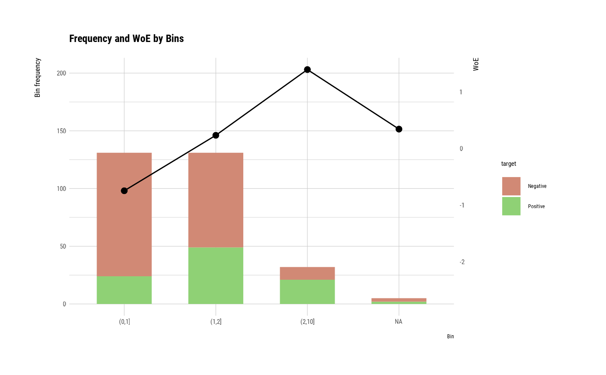

The performance_bin() calculates metrics to evaluate the performance of binned variable for binomial classification model.
performance_bin(y, x, na.rm = FALSE)Arguments
- y
character or numeric, integer, factor. a binary response variable (0, 1). The variable must contain only the integers 0 and 1 as element. However, in the case of factor/character having two levels, it is performed while type conversion is performed in the calculation process.
- x
integer or factor, character. At least 2 different values. and Inf is not allowed.
- na.rm
logical. a logical indicating whether missing values should be removed.
Value
an object of "performance_bin" class. vaue of data.frame is as follows.
Bin : character. bins.
CntRec : integer. frequency by bins.
CntPos : integer. frequency of positive by bins.
CntNeg : integer. frequency of negative by bins.
CntCumPos : integer. cumulate frequency of positive by bins.
CntCumNeg : integer. cumulate frequency of negative by bins.
RatePos : integer. relative frequency of positive by bins.
RateNeg : integer. relative frequency of negative by bins.
RateCumPos : numeric. cumulate relative frequency of positive by bins.
RateCumNeg : numeric. cumulate relative frequency of negative by bins.
Odds : numeric. odd ratio.
LnOdds : numeric. loged odd ratio.
WoE : numeric. weight of evidence.
IV : numeric. Jeffrey's Information Value.
JSD : numeric. Jensen-Shannon Divergence.
AUC : numeric. AUC. area under curve.
Attributes of "performance_bin" class is as follows.
names : character. variable name of data.frame with "Binning Table".
class : character. name of class. "performance_bin" "data.frame".
row.names : character. row name of data.frame with "Binning Table".
IV : numeric. Jeffrey's Information Value.
JSD : numeric. Jensen-Shannon Divergence.
KS : numeric. Kolmogorov-Smirnov Statistics.
gini : numeric. Gini index.
HHI : numeric. Herfindahl-Hirschman Index.
HHI_norm : numeric.normalized Herfindahl-Hirschman Index.
Cramer_V : numeric. Cramer's V Statistics.
chisq_test : data.frame. table of significance tests. name is as follows.
Bin A : character. first bins.
Bin B : character. second bins.
statistics : numeric. statistics of Chi-square test.
p_value : numeric. p-value of Chi-square test.
Details
This function is useful when used with the mutate/transmute function of the dplyr package.
See also
Examples
# \donttest{
# Generate data for the example
heartfailure2 <- heartfailure
set.seed(123)
heartfailure2[sample(seq(NROW(heartfailure2)), 5), "creatinine"] <- NA
# Change the target variable to 0(negative) and 1(positive).
heartfailure2$death_event_2 <- ifelse(heartfailure2$death_event %in% "Yes", 1, 0)
# Binnig from creatinine to platelets_bin.
breaks <- c(0, 1, 2, 10)
heartfailure2$creatinine_bin <- cut(heartfailure2$creatinine, breaks)
# Diagnose performance binned variable
perf <- performance_bin(heartfailure2$death_event_2, heartfailure2$creatinine_bin)
perf
#> Bin CntRec CntPos CntNeg CntCumPos CntCumNeg RatePos RateNeg RateCumPos
#> 1 (0,1] 131 24 107 24 107 0.25000 0.52709 0.25000
#> 2 (1,2] 131 49 82 73 189 0.51042 0.40394 0.76042
#> 3 (2,10] 32 21 11 94 200 0.21875 0.05419 0.97917
#> 4 <NA> 5 2 3 96 203 0.02083 0.01478 1.00000
#> 5 Total 299 96 203 NA NA 1.00000 1.00000 NA
#> RateCumNeg Odds LnOdds WoE IV JSD AUC
#> 1 0.52709 0.22430 -1.49478 -0.74592 0.20669 0.02525 0.06589
#> 2 0.93103 0.59756 -0.51490 0.23396 0.02491 0.00311 0.20407
#> 3 0.98522 1.90909 0.64663 1.39548 0.22964 0.02658 0.04713
#> 4 1.00000 0.66667 -0.40547 0.34339 0.00208 0.00026 0.01462
#> 5 NA 0.47291 -0.74886 NA 0.46332 0.05520 0.33172
summary(perf)
#> ── Binning Table ──────────────────────── Several Metrics ──
#> Bin CntRec CntPos CntNeg RatePos RateNeg Odds WoE IV JSD
#> 1 (0,1] 131 24 107 0.25000 0.52709 0.22430 -0.74592 0.20669 0.02525
#> 2 (1,2] 131 49 82 0.51042 0.40394 0.59756 0.23396 0.02491 0.00311
#> 3 (2,10] 32 21 11 0.21875 0.05419 1.90909 1.39548 0.22964 0.02658
#> 4 <NA> 5 2 3 0.02083 0.01478 0.66667 0.34339 0.00208 0.00026
#> 5 Total 299 96 203 1.00000 1.00000 0.47291 NA 0.46332 0.05520
#> AUC
#> 1 0.06589
#> 2 0.20407
#> 3 0.04713
#> 4 0.01462
#> 5 0.33172
#>
#> ── General Metrics ─────────────────────────────────────────
#> • Gini index : -0.33657
#> • IV (Jeffrey) : 0.46332
#> • JS (Jensen-Shannon) Divergence : 0.0552
#> • Kolmogorov-Smirnov Statistics : 0.27709
#> • HHI (Herfindahl-Hirschman Index) : 0.39564
#> • HHI (normalized) : 0.19419
#> • Cramer's V : 0.31765
#>
#> ── Significance Tests ──────────────────── Chisquare Test ──
#> Bin A Bin B statistics p_value
#> 1 (0,1] (1,2] 11.86852 0.000570907
#> 2 (1,2] (2,10] 8.35901 0.003837797
#>
plot(perf)

# Diagnose performance binned variable without NA
perf <- performance_bin(heartfailure2$death_event_2, heartfailure2$creatinine_bin, na.rm = TRUE)
perf
#> Bin CntRec CntPos CntNeg CntCumPos CntCumNeg RatePos RateNeg RateCumPos
#> 1 (0,1] 131 24 107 24 107 0.25532 0.535 0.25532
#> 2 (1,2] 131 49 82 73 189 0.52128 0.410 0.77660
#> 3 (2,10] 32 21 11 94 200 0.22340 0.055 1.00000
#> 4 Total 294 94 200 NA NA 1.00000 1.000 NA
#> RateCumNeg Odds LnOdds WoE IV JSD AUC
#> 1 0.535 0.22430 -1.49478 -0.73975 0.20689 0.02529 0.06830
#> 2 0.945 0.59756 -0.51490 0.24012 0.02672 0.00333 0.21154
#> 3 1.000 1.90909 0.64663 1.40165 0.23604 0.02731 0.04886
#> 4 NA 0.47000 -0.75502 NA 0.46966 0.05592 0.32870
summary(perf)
#> ── Binning Table ──────────────────────── Several Metrics ──
#> Bin CntRec CntPos CntNeg RatePos RateNeg Odds WoE IV JSD
#> 1 (0,1] 131 24 107 0.25532 0.535 0.22430 -0.73975 0.20689 0.02529
#> 2 (1,2] 131 49 82 0.52128 0.410 0.59756 0.24012 0.02672 0.00333
#> 3 (2,10] 32 21 11 0.22340 0.055 1.90909 1.40165 0.23604 0.02731
#> 4 Total 294 94 200 1.00000 1.000 0.47000 NA 0.46966 0.05592
#> AUC
#> 1 0.06830
#> 2 0.21154
#> 3 0.04886
#> 4 0.32870
#>
#> ── General Metrics ─────────────────────────────────────────
#> • Gini index : -0.34261
#> • IV (Jeffrey) : 0.46966
#> • JS (Jensen-Shannon) Divergence : 0.05592
#> • Kolmogorov-Smirnov Statistics : 0.27968
#> • HHI (Herfindahl-Hirschman Index) : 0.40893
#> • HHI (normalized) : 0.11339
#> • Cramer's V : 0.31765
#>
#> ── Significance Tests ──────────────────── Chisquare Test ──
#> Bin A Bin B statistics p_value
#> 1 (0,1] (1,2] 11.86852 0.000570907
#> 2 (1,2] (2,10] 8.35901 0.003837797
#>
plot(perf)
 # }
# }